Click a highlighted definition to read it here without losing your place. Follow section numbers alongside the original PDF.
How to use these solutions
These are the textbook's §2.4 Problems 1–12, not HW1's different problem list. Read the paraphrased task, follow the Mermaid flow, and try writing the code before opening the worked solution. Return to Chapter 2.
Download the complete OCaml solutions and checks. Every implementation below is included in that file. Helpers for differentiation and both fold versions of all five Problem 10 functions are also included. Solutions assume arithmetic results fit OCaml's integer range.
Problem 1 — Inclusive range
Thinking steps
- Compare bounds. Reversed bounds give empty; equal bounds give one element.
- Emit the lower endpoint. Cons it onto the result for the next interval.
- Check termination. The remaining interval shrinks; do not increment past the final endpoint.
Source: p. 89. Task: construct the integers from n through m, inclusive. Key idea: a smaller interval. Related homework: HW1 guide.
View Mermaid source
flowchart TD
accTitle: Problem 1 - shrink an inclusive interval
accDescr: Empty intervals return empty; a singleton stops without overflowing the next integer; otherwise emit the lower endpoint.
A["range n m"] --> B{"n greater than m?"}
B -->|Yes| C["Return empty list"]
B -->|No| D{"n equals m?"}
D -->|Yes| E["Return singleton m"]
D -->|No| F["Emit n; solve range n+1 m"]
Worked solution and trace
let rec range n m =
if n > m then []
else if n = m then [m]
else n :: range (n + 1) m
For range 3 5, expand 3 :: (4 :: [5]). The interval length decreases each time. The singleton branch avoids computing max_int + 1 at the last endpoint. The book assumes n <= m; returning [] for a reversed interval is an explicit extension. Time and output space are linear in the interval length; this direct version also uses linear call-stack space.
Problem 2 — Flatten one list level
Thinking steps
- Identify the outer list. Each element is itself a list.
- Choose the empty answer. No inner lists means no output elements.
- Combine with append. Append the current inner list to the flattened tail, preserving order.
Source: p. 90. Task: concatenate a list of lists in order. Key idea: replace each outer list constructor with append, not cons.
View Mermaid source
flowchart TD
accTitle: Problem 2 - flatten a list of lists
accDescr: Flatten the tail, then append the current inner list before that result.
A["Outer list"] --> B{"Empty?"}
B -->|Yes| C["Return empty list"]
B -->|No| D["Take current inner list and remaining lists"]
D --> E["Flatten remaining lists"]
E --> F["Append current inner list before the result"]
Worked solution and trace
let concat xs = List.fold_right (@) xs []
For [[1;2]; []; [3]], the expansion is [1;2] @ ([] @ ([3] @ [])). Empty inner lists contribute nothing. Using :: would retain nesting. Each inner list is copied once by append, giving time linear in the total number of elements plus the outer list length. Test an empty outer list and several empty inner lists.
Problem 3 — Interleave two lists
Thinking steps
- Inspect both shapes. If either list is empty, retain the other as the remaining suffix.
- Emit one pair of heads. Take the first list head before the second list head.
- Recurse on both tails. Keep the same alternating rule until one input ends.
Source: p. 90. Task: alternate elements, starting with the first list, then retain the unmatched suffix. This is not a function that builds a list of pairs.
View Mermaid source
flowchart TD
accTitle: Problem 3 - interleave with asymmetric remainders
accDescr: When either list is exhausted, return the other; otherwise emit two heads and recur on two tails.
A["Inspect both lists"] --> B{"Either list empty?"}
B -->|Yes| C["Return the other list unchanged"]
B -->|No| D["Emit first head, then second head"]
D --> E["Interleave the two tails"]
Worked solution and trace
let rec zipper xs ys = match xs, ys with
| [], rest | rest, [] -> rest
| x::xt, y::yt -> x :: y :: zipper xt yt
zipper [1;3] [2;4;6] emits 1, 2, then 3, 4, then shares the remaining [6]. Each recursive call consumes one element from both lists. Check each list empty separately, and each unequal-length direction. The implementation is polymorphic, which includes the integer-list type requested by the book.
Problem 4 — Unzip pairs
Thinking steps
- Choose the base pair. Empty input returns two empty lists.
- Unzip the tail once. Name its two component lists.
- Prepend each component. Add the current first component to the first output and the second to the second output.
Source: pp. 90–91. Task: separate first and second components while preserving order. Key idea: the recursive answer is itself a pair.
View Mermaid source
flowchart TD
accTitle: Problem 4 - use both components of one recursive answer
accDescr: Unzip the tail once, then prepend each head component to its matching result list.
A["Pair list"] --> B{"Empty?"}
B -->|Yes| C["Return two empty lists"]
B -->|No| D["Head is x,y; unzip tail once"]
D --> E["Tail answer is xs,ys"]
E --> F["Return x::xs and y::ys"]
Worked solution and trace
let rec unzip = function
| [] -> [], []
| (x,y)::rest -> let xs,ys = unzip rest in x::xs, y::ys
For [(1,"a"); (2,"b")], the tail gives ([2],["b"]); prepend 1 and "a". The result has type 'a list * 'b list, and the two lists need not share an element type. Calling unzip rest twice would duplicate work. Time is linear; the induction hypothesis states both output lists already preserve the tail's component order.
Problem 5 — Drop a prefix
Thinking steps
- Check the two stopping cases. Stop when the count reaches zero or the input list is empty.
- Discard a head. Decrease the count while moving to the tail.
- Return the remaining suffix. No rebuilding or element inspection is needed.
Source: p. 91. Task: remove n leading elements, returning empty if the list runs out.
View Mermaid source
flowchart TD
accTitle: Problem 5 - count down while discarding heads
accDescr: Stop when the requested count is exhausted or the list is empty.
A["drop list n"] --> B{"n at most zero?"}
B -->|Yes| C["Return current list"]
B -->|No| D{"List empty?"}
D -->|Yes| E["Return empty"]
D -->|No| F["Discard head; call drop tail n-1"]
Worked solution and trace
let rec drop xs n =
if n <= 0 then xs
else match xs with [] -> [] | _::rest -> drop rest (n-1)
drop [1;2;3] 2 becomes drop [2;3] 1, then drop [3] 0, giving [3]. No output rebuilding is needed: the answer is an existing suffix. Negative n is unspecified in the problem; this solution treats it as zero. The call is tail recursive and visits at most min(n, length xs) nodes for nonnegative n.
Problem 6 — Generalized summation
Thinking steps
- Determine the interval. Identify its bounds and the function providing each term.
- Handle the empty or singleton case. Use zero for an empty sum and one function application for a singleton.
- Add the current term. Combine it with the sum over the smaller interval.
Source: pp. 91–92. Task: sum f(i) over an inclusive interval. Key idea: parameterize the contribution, keep the traversal.
View Mermaid source
flowchart TD
accTitle: Problem 6 - separate the interval from its contribution function
accDescr: An empty interval contributes zero; otherwise add the current contribution to the smaller interval's sum.
A["sigma f a b"] --> B{"Interval empty?"}
B -->|Yes| C["Return 0"]
B -->|No| D{"Single endpoint?"}
D -->|Yes| E["Return f a"]
D -->|No| F["Compute f a plus sigma f a+1 b"]
Worked solution and trace
let rec sigma f a b =
if a > b then 0
else if a = b then f a
else f a + sigma f (a+1) b
For the square function on 1 through 3, the contributions are 1, 4, 9, so the answer is 14. The empty-sum identity is 0. The function is called once per integer, assuming mathematical, side-effect-free f; this expression does not prescribe an effect order for OCaml's + operands. Use explicit let bindings if effect order matters. Boundary checks include equal endpoints and an empty interval.
Problem 7 — Repeated function application
Thinking steps
- Separate construction from application. iter receives n and f, then returns a function waiting for x.
- Use identity at zero. Return x unchanged when no applications remain.
- Apply and decrease. Replace x with f x and decrease the count until zero.
Source: p. 92. Task: return a function that applies f exactly n times. Key idea: zero repetitions means the identity function, not the number zero.
View Mermaid source
flowchart TD
accTitle: Problem 7 - build an n-fold function
accDescr: Return a function whose loop counts applications down to zero while carrying the current value.
A["Receive n and f"] --> B["Return a function waiting for x"]
B --> C{"Remaining count zero?"}
C -->|Yes| D["Return current x"]
C -->|No| E["Replace x by f x; decrement count"]
E --> C
Worked solution and trace
let iter (n,f) =
if n < 0 then invalid_arg "iter: negative count";
let rec apply n x = if n = 0 then x else apply (n-1) (f x) in
apply n
For iter (3, fun x -> x+2) 0, the carried values are 0, 2, 4, 6. Constructing iter (3,f) returns a function; it does not immediately call f. Test n = 0 with a function that would fail if called. Negative repetition is rejected because the problem only defines zero and positive counts. The returned function uses tail recursion.
Problem 8 — Universal predicate with a right fold
Thinking steps
- Choose the identity. The empty-list answer is true.
- Describe the combining rule. Combine the current predicate result with the suffix result using AND.
- Use the required fold. Implement that rule with fold_right; strict folding still computes the suffix.
Source: p. 93. Task: all elements must satisfy p; use fold_right.
View Mermaid source
flowchart TD
accTitle: Problem 8 - fold universal truth
accDescr: The empty list is true; combine each predicate result with the suffix's result using conjunction.
A["Empty-list answer: true"] --> B["Right fold computes suffix result"]
B --> C["Combine p head AND suffix result"]
C --> D["Any false contribution makes the result false"]
Worked solution and trace
let all p xs = List.fold_right (fun x rest -> p x && rest) xs true
For [7;8;9] and p x = x > 5, the logical expression is true && (true && (true && true)). The empty list returns true because there is no counterexample. OCaml evaluates the folded suffix before applying the combining function, so this satisfies the fold requirement but is not an early-stopping traversal. Test empty input and a failure near either end.
Problem 9 — Digits to a number
Thinking steps
- Define the accumulator. It denotes the number represented by the processed prefix.
- Read the next digit. Multiply the accumulator by ten, then add that digit.
- Fold from the left. Start at zero and verify the intermediate values for a three-digit example.
Source: p. 93. Task: read decimal digits with fold_left. Invariant: the accumulator is the number represented by the processed prefix.
View Mermaid source
flowchart LR
accTitle: Problem 9 - extend a decimal prefix
accDescr: Processing digits one, two, three updates the prefix value from zero to one to twelve to one hundred twenty-three.
A["0"] -->|"digit 1: 10*0+1"| B["1"]
B -->|"digit 2: 10*1+2"| C["12"]
C -->|"digit 3: 10*12+3"| D["123"]
Worked solution and checks
let lst2int xs = List.fold_left (fun acc digit -> 10*acc+digit) 0 xs
Multiplication by ten shifts existing digits left by one decimal place; addition installs the new units digit. Empty input gives 0 and leading zeros have no effect. The book assumes each element is between 0 and 9; validation is therefore not part of the required algorithm. Test [0;4], [0], and []. Very long inputs can overflow OCaml integers.
Problem 10 — Rewrite five functions with folds
Thinking steps
- Name the partial result. Choose a count, boolean, reversed prefix, or processed suffix as appropriate.
- Choose an identity. Use zero, true, or an empty list according to the result type.
- Write both combination directions. Right folds receive element then suffix; left folds receive accumulator then element.
- Restore order if needed. Reverse the accumulated result for left-fold map and filter; test all five functions.
Source: pp. 93–94. Task: length, reverse, positive-element check, map, and filter. The wording mentions both folds; the downloadable solution supplies both versions of all five.
View Mermaid source
flowchart TD
accTitle: Problem 10 - derive a fold from the result being built
accDescr: Counting, conjunction, reversal, transformation, and selection require different accumulator meanings.
A["Which result are you constructing?"] --> B["Length: count processed elements"]
A --> C["All positive: conjunction with true identity"]
A --> D["Reverse: prepend into a left-fold accumulator"]
A --> E["Map: transform, then preserve order"]
A --> F["Filter: keep selected elements in order"]
E --> G["Right fold: cons directly; left fold: reverse once at the end"]
F --> G
All five solutions and why order matters
| Function | Right-fold solution | Left-fold solution |
|---|---|---|
| Length | List.fold_right (fun _ n -> n+1) xs 0 |
List.fold_left (fun n _ -> n+1) 0 xs |
| Reverse | List.fold_right (fun x rest -> rest @ [x]) xs [] |
List.fold_left (fun rest x -> x::rest) [] xs |
| All positive | List.fold_right (fun x rest -> x>0 && rest) xs true |
List.fold_left (fun rest x -> rest && x>0) true xs |
| Map f | List.fold_right (fun x rest -> f x::rest) xs [] |
List.rev (List.fold_left (fun rest x -> f x::rest) [] xs) |
| Filter p | List.fold_right (fun x rest -> if p x then x::rest else rest) xs [] |
List.rev (List.fold_left (fun rest x -> if p x then x::rest else rest) [] xs) |
For mapping increment over [1;2;3], the left fold builds [4;3;2], then List.rev restores [2;3;4]. That final reversal is essential. The direct right-fold reverse uses repeated append and is quadratic; the left-fold reverse is linear. These are value-equivalent for pure f and p; side-effect order can differ between fold directions.
Checks: empty input, singleton input, and [3;0;-2;4] distinguish order and predicate mistakes. The solution file compares every version to the corresponding standard-library behavior.
Problem 11 — Peano addition and multiplication
Thinking steps
- Match ZERO or SUCC. Recurse structurally on the first natural-number operand.
- Define addition first. ZERO contributes nothing; SUCC adds one constructor around the smaller sum.
- Define multiplication with addition. Each SUCC contributes one more copy of the second operand.
Source: pp. 94–95. Task: arithmetic on ZERO | SUCC of nat. Definitions: inductive definition and structural recursion.
View Mermaid source
flowchart TD
accTitle: Problem 11 - derive arithmetic from ZERO and SUCC
accDescr: Addition turns a successor into a successor of a smaller sum; multiplication turns it into one more addition.
A["Inspect first natural number"] --> B{"ZERO or SUCC a?"}
B -->|ZERO| C["Addition returns b; multiplication returns ZERO"]
B -->|SUCC a| D["Addition: SUCC of add a b"]
B -->|SUCC a| E["Multiplication: add b to mul a b"]
Worked solution and proof idea
type nat = ZERO | SUCC of nat
let rec natadd a b = match a with
| ZERO -> b
| SUCC a' -> SUCC (natadd a' b)
let rec natmul a b = match a with
| ZERO -> ZERO
| SUCC a' -> natadd b (natmul a' b)
Interpret the equations mathematically: 0+b=b, (a+1)+b=1+(a+b), 0*b=0, and (a+1)*b=b+a*b. For 2 times 3, multiplication expands to 3 plus (3 plus 0). Induction on the first argument proves both definitions correct; multiplication uses the already-established addition result. Check zero in either argument, one, and the book's 2/3 example.
Problem 12 — Symbolic differentiation
Thinking steps
- Keep the variable name fixed. The input expression changes during recursion; the chosen variable does not.
- Select the constructor rule. Handle constants, variables, powers, sums, and products separately.
- Apply the product rule one factor at a time. Differentiate one factor in each output term and keep all other factors.
- Simplify and validate. Remove neutral terms if desired, then check boundary cases and the worked polynomial.
Source: pp. 95–96. Task: differentiate a syntax tree with respect to a named variable. Key distinction: return another expression tree, not the value of the derivative at a chosen number.
View Mermaid source
flowchart TD
accTitle: Problem 12 - dispatch differentiation by expression constructor
accDescr: Constants, variables, powers, sums, and products have separate derivative rules; product terms differentiate one factor at a time.
A["diff expression with respect to x"] --> B{"Constructor"}
B -->|Const| C["0"]
B -->|Var y| D["1 if y=x, otherwise 0"]
B -->|Power y,n| E["0 if y differs or n=0; otherwise n times y to n-1"]
B -->|Sum| F["Differentiate every summand"]
B -->|Times h and tail| G["Derivative h times tail PLUS h times derivative tail"]
G --> H["Remove zero terms and unit factors"]
F --> H
E --> H
Worked solution, product rule, and simplification
let rec diff (e,x) = match e with
| Const _ -> Const 0
| Var y -> Const (if x = y then 1 else 0)
| Power (y,n) ->
if x <> y || n = 0 then Const 0
else product [Const n; power y (n-1)]
| Sum es -> sum (List.map (fun e -> diff (e,x)) es)
| Times [] -> Const 0
| Times (h::t) ->
sum [product [diff (h,x); product t];
product [h; diff (Times t,x)]]
The complete file defines sum, product, and power as smart constructors: remove zero summands, eliminate unit factors, turn an empty sum into 0 and an empty product into 1, and represent powers 0 and 1 directly. This gives the book's displayed simplified answer for x² + 2x + 1: 2x + 2.
For three factors, the recursive rule expands to h'uv + h(u'v + uv'). Each term differentiates exactly one factor. Differentiating every factor in one product would incorrectly give h'u'v'.
Boundary cases: the derivative of Power("x",0) is 0 without constructing a negative power; another variable contributes 0; the empty product denotes 1 and therefore differentiates to 0. The polynomial interpretation uses nonnegative powers. Negative exponents require a rational-function domain and restrictions at zero, beyond these checks.
The test file checks the exact book example and evaluates the derived tree for x*x*x at several integers against 3*x*x. A numerically correct tree may have a different syntactic shape from the book's example; algebraic equivalence and exact constructor equality are different requirements.
Connect this exercise set to the rest of the book
Problems 1–7 establish recursive traversal and function values. Problems 8–10 make traversal reusable. Problem 11 follows a datatype's constructors exactly. Problem 12 transforms one syntax tree into another. The same pattern becomes an interpreter in Chapters 3–7, a type analyzer in Chapter 8, and a translator in Chapter 9.